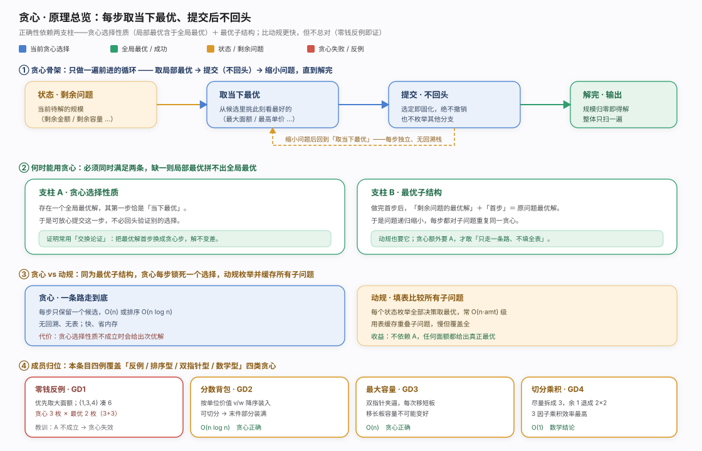
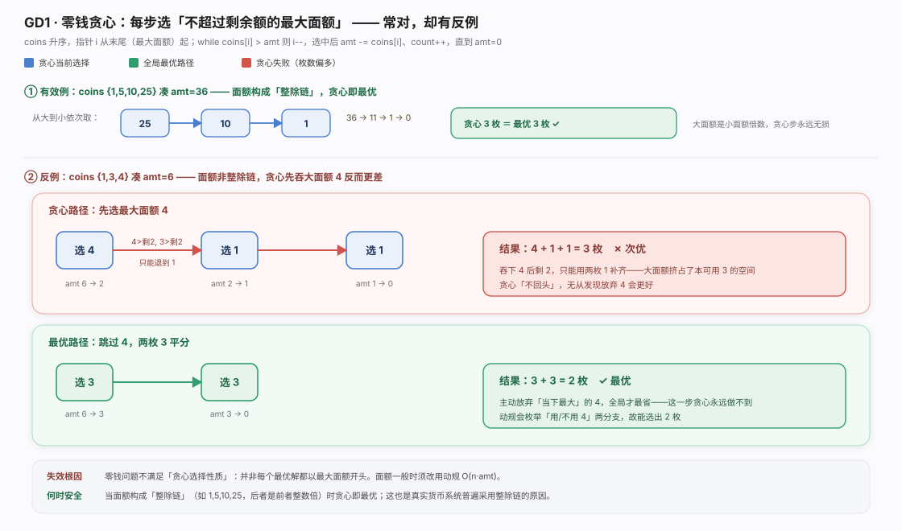
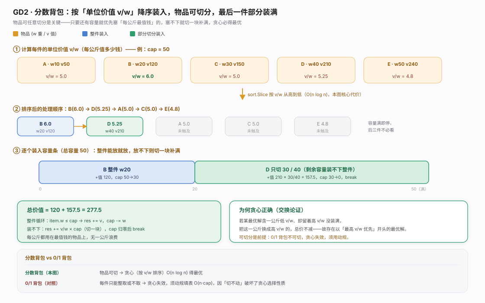
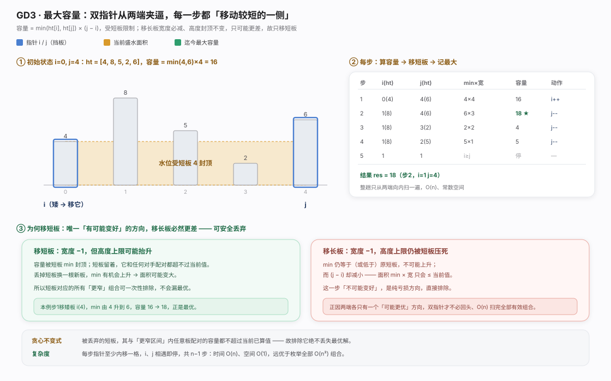
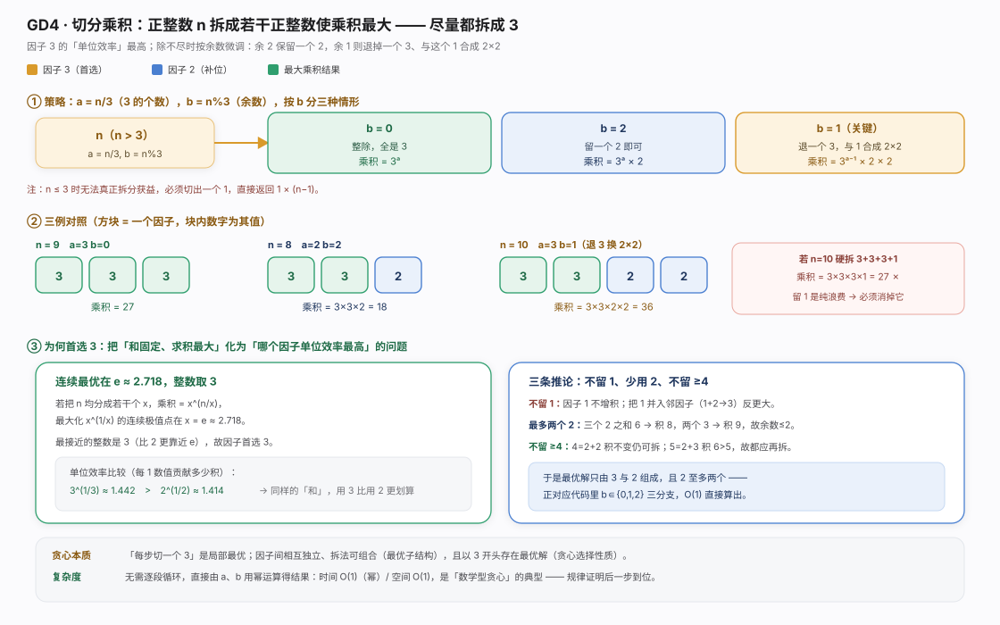
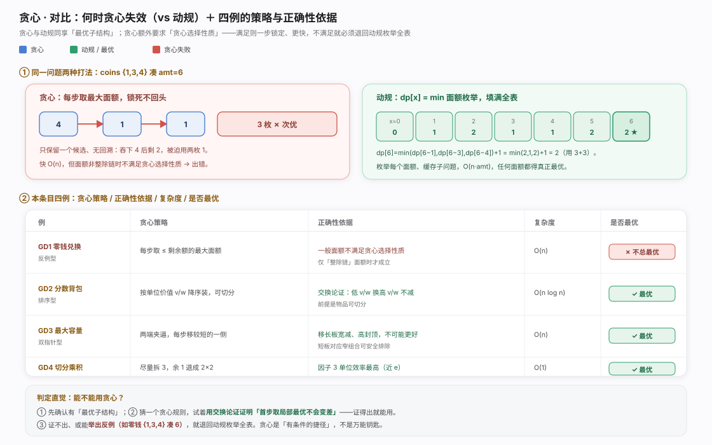

贪心(greedy)是一种决策姿态:每步挑「此刻最好」的候选,选定即固化、绝不回头,只需一遍向前推进(常配排序或双指针),又快又省内存。但「快」的前提是「对」:正确性依赖最优子结构(与动规共享)+贪心选择性质(存在以贪心步开头的全局最优,靠交换论证)。后者是贪心额外的支柱,成立才敢「只走一条路、不填全表」。四例覆盖四种面孔——零钱兑换是反例(支柱缺失),分数背包排序型,最大容量双指针型,切分乘积数学型。

零钱贪心从最大面额起贪,amt -= coins[i]直到归零;对 {1,5,10,25} 这类整除链恰好最优(真实货币的设计原因)。但它并非总对:反例 {1,3,4} 凑 6 贪心给 3 枚(4+1+1)、最优仅 2 枚(3+3),因一般面额不满足贪心选择性质。此时必须退回动规 O(n·amt)——本例价值在于给贪心划边界:先证贪心选择性质再用。
package chapter_greedy
/* 零钱兑换：贪心 */
func coinChangeGreedy(coins []int, amt int) int {
// 假设 coins 列表有序
i := len(coins) - 1
count := 0
// 循环进行贪心选择，直到无剩余金额
for amt > 0 {
// 找到小于且最接近剩余金额的硬币
for i > 0 && coins[i] > amt {
i--
}
// 选择 coins[i]
amt -= coins[i]
count++
}
// 若未找到可行方案，则返回 -1
if amt != 0 {
return -1
}
return count
}
分数背包按单位价值 v/w 从高到低排序逐个装,装不下就切一块填满剩余容量后 break,每公斤都用在最值钱物品上。正确性核心是物品可切分(交换论证:低 v/w 换高 v/w 总价不减);一旦不可切分(0/1 背包)交换失效、须改动规 O(n·cap)。复杂度由排序主导 O(n log n)。
package chapter_greedy
import "sort"
/* 物品 */
type Item struct {
w int // 物品重量
v int // 物品价值
}
/* 分数背包：贪心 */
func fractionalKnapsack(wgt []int, val []int, cap int) float64 {
// 创建物品列表，包含两个属性：重量、价值
items := make([]Item, len(wgt))
for i := 0; i < len(wgt); i++ {
items[i] = Item{wgt[i], val[i]}
}
// 按照单位价值 item.v / item.w 从高到低进行排序
sort.Slice(items, func(i, j int) bool {
return float64(items[i].v)/float64(items[i].w) > float64(items[j].v)/float64(items[j].w)
})
// 循环贪心选择
res := 0.0
for _, item := range items {
if item.w <= cap {
// 若剩余容量充足，则将当前物品整个装进背包
res += float64(item.v)
cap -= item.w
} else {
// 若剩余容量不足，则将当前物品的一部分装进背包
res += float64(item.v) / float64(item.w) * float64(cap)
// 已无剩余容量，因此跳出循环
break
}
}
return res
}
最大容量(盛水容器)用双指针从两端夹逼,每步算 min(ht[i],ht[j])*(j-i) 更新最大值,移较矮一侧直到相遇,O(n)/O(1)。「移短板」是唯一可能变好的方向:容量被短板 min 封顶,保留短板的更窄组合只会 ≤ 当前值可一次性排除;移长板 min 不升宽度还减纯亏损。故两端各只一个候选方向,不回头即可扫完全部有效组合,避免 O(n²) 枚举。
package chapter_greedy
import "math"
/* 最大容量：贪心 */
func maxCapacity(ht []int) int {
// 初始化 i, j，使其分列数组两端
i, j := 0, len(ht)-1
// 初始最大容量为 0
res := 0
// 循环贪心选择，直至两板相遇
for i < j {
// 更新最大容量
capacity := int(math.Min(float64(ht[i]), float64(ht[j]))) * (j - i)
res = int(math.Max(float64(res), float64(capacity)))
// 向内移动短板
if ht[i] < ht[j] {
i++
} else {
j--
}
}
return res
}
切分乘积把 n 拆成若干正整数使乘积最大,策略是尽量拆成 3:a=n/3,b=n%3,b=0得 3^a、b=2得 3^a*2、b=1 退一个 3 与 1 合成 2×2 得 3^(a-1)*4(n≤3 返回 1*(n-1))。为何是 3?最大化 x^(1/x) 极值点在 e≈2.718、最近整数是 3(3^(1/3)>2^(1/2))。三推论:不留 1、最多两个 2、不留 ≥4,恰对应 b∈{0,1,2} 三分支,幂运算 O(1)。这是「数学型贪心」:规律证毕无需循环。
package chapter_greedy
import "math"
/* 最大切分乘积：贪心 */
func maxProductCutting(n int) int {
// 当 n <= 3 时，必须切分出一个 1
if n <= 3 {
return 1 * (n - 1)
}
// 贪心地切分出 3 ，a 为 3 的个数，b 为余数
a := n / 3
b := n % 3
if b == 1 {
// 当余数为 1 时，将一对 1 * 3 转化为 2 * 2
return int(math.Pow(3, float64(a-1))) * 2 * 2
}
if b == 2 {
// 当余数为 2 时，不做处理
return int(math.Pow(3, float64(a))) * 2
}
// 当余数为 0 时，不做处理
return int(math.Pow(3, float64(a)))
}
四例排成一条「贪心可靠性」谱:分数背包/最大容量/切分乘积都能证得贪心选择性质、贪心即最优且快过动规;唯 零钱兑换 一般面额缺此支柱只得次优,须退回动规。选谁:先确认最优子结构,再试证「首步取局部最优不让解变差」——证得出用贪心(快),证不出或有反例(如 {1,3,4} 凑 6)用动规(全,O(n·amt))。贪心是有条件的捷径。详见对比图。